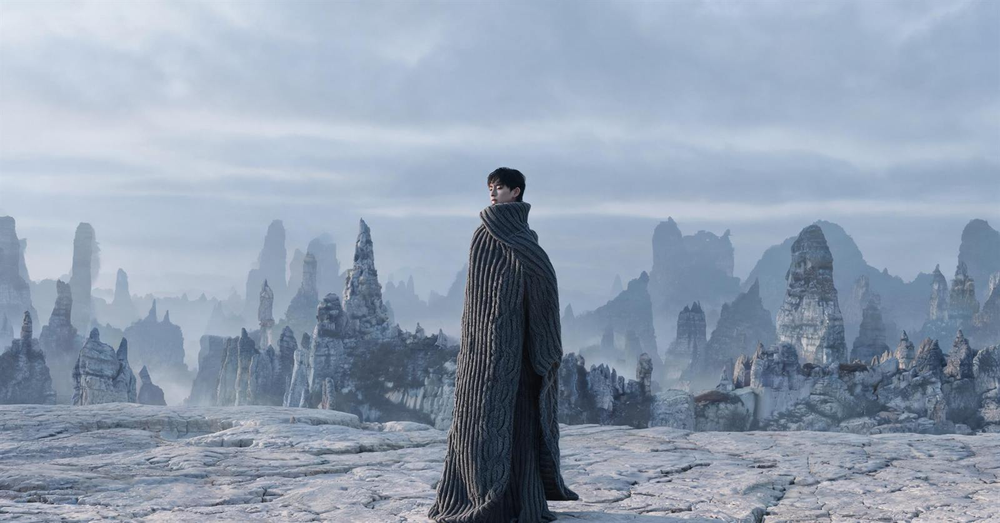
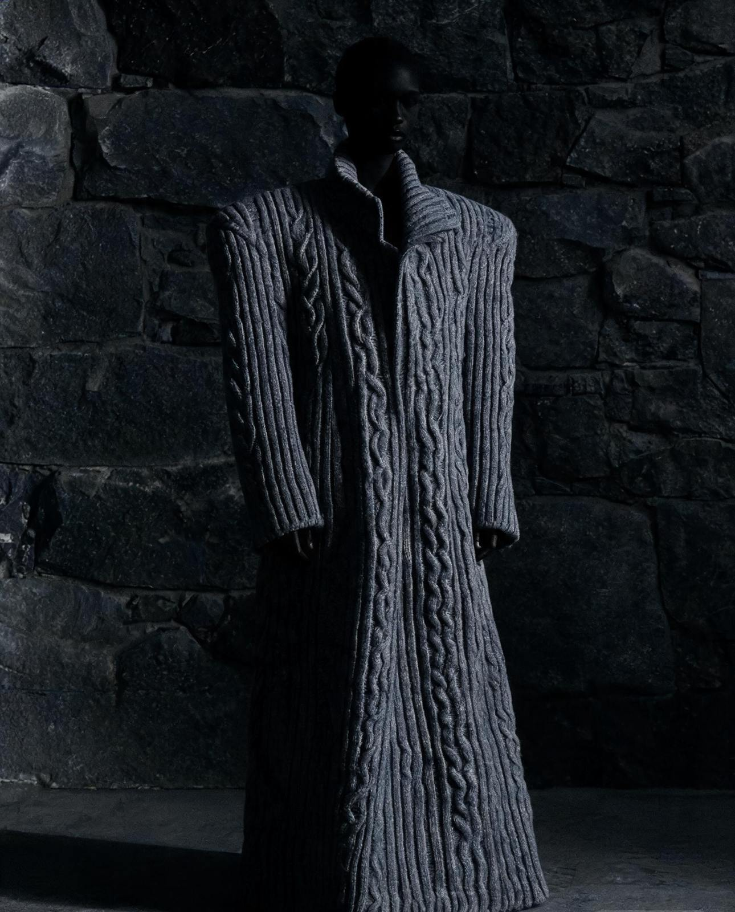
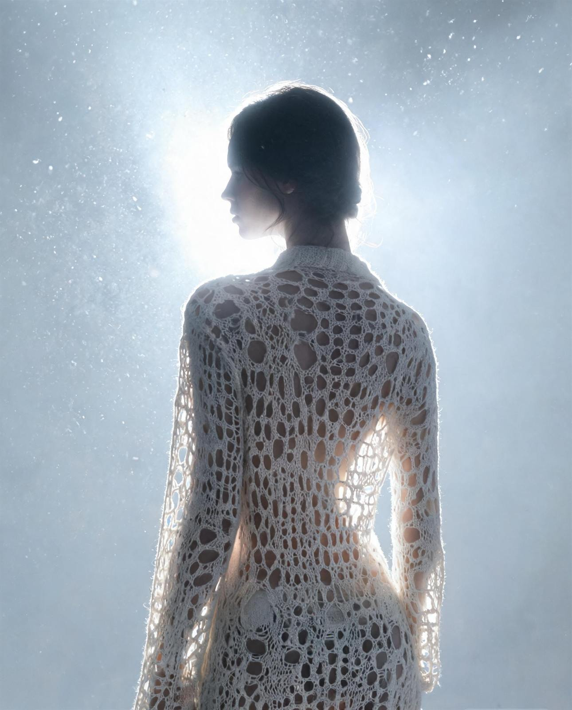
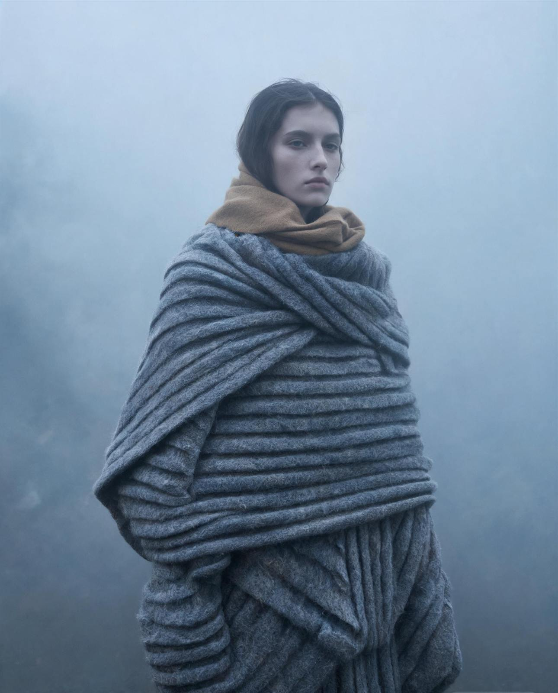
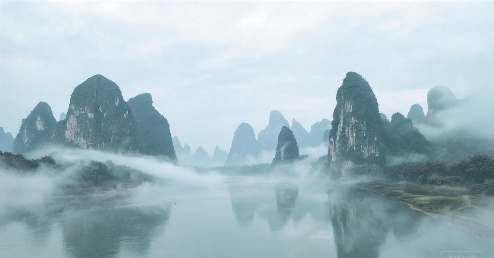
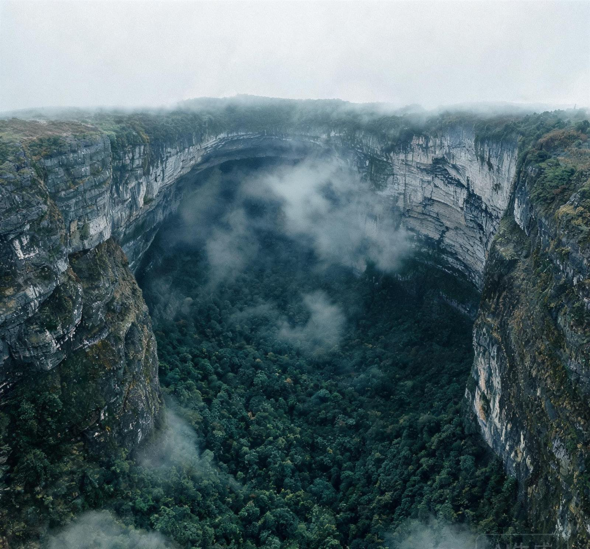
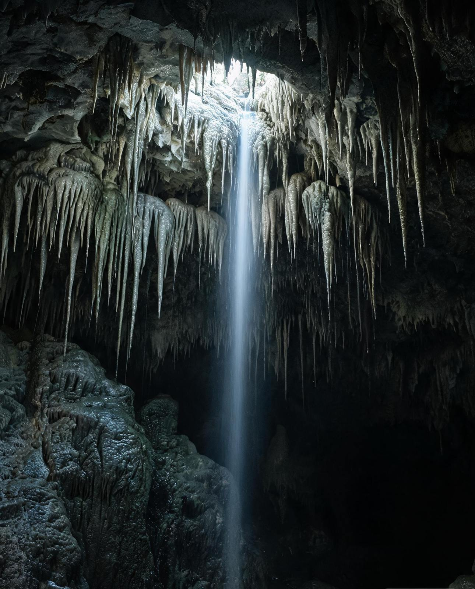
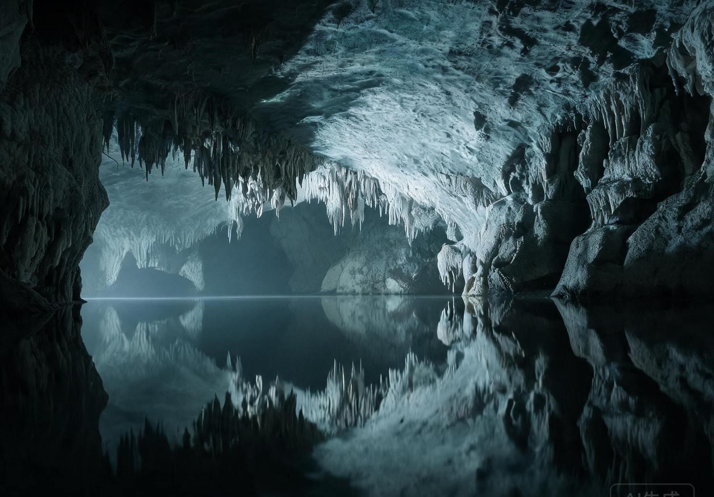
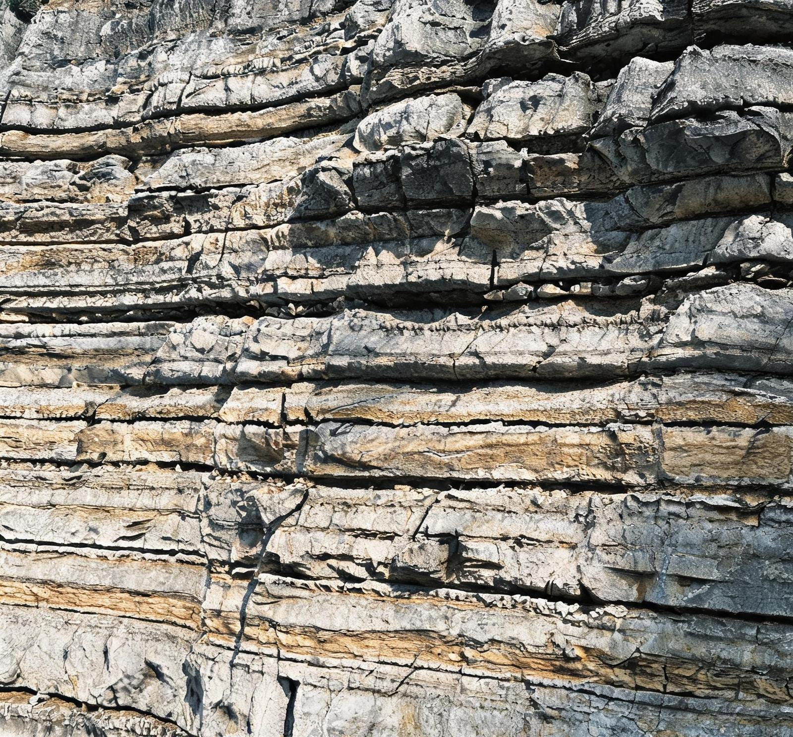
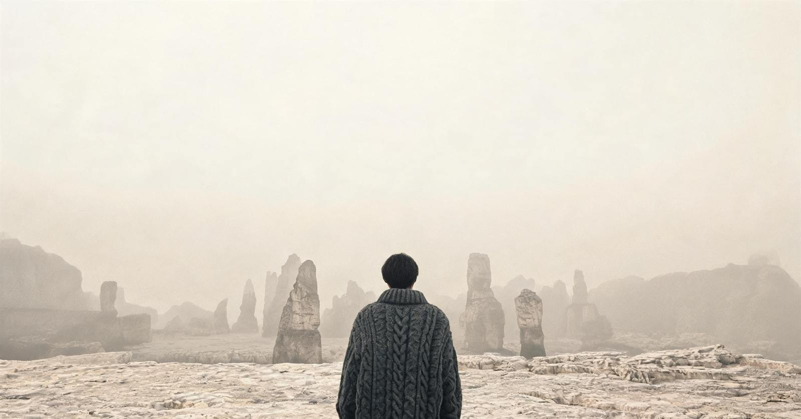

岩壁起伏
RELIEF
以罗纹与集圈制造纵向的密度差，凸条之间留下深影，侧光下呈岩壁的高低错落。
凹凸组织 · 绞花南通大学杏林学院 服装设计与工程 2027 届毕业设计
NO. 01 — KARST
KARST TOPOGRAPHY / KNITTED TEXTILE RECONSTRUCTION
以岩壁起伏、层理叠错、孔洞空透与灰调层次为形态母题， 在平针基底上重建针织面料的表面结构——让地貌的生成方式， 在针织物上重新发生。

在雾与石之间，
织物成为第三种地貌。
01设计理念 / PHILOSOPHY
喀斯特地貌由地下水与地表水对可溶性岩石的溶蚀、侵蚀与堆积作用形成。 岩壁凹凸起伏、岩层层叠、溶洞空透、岩石呈由浅至深的灰调—— 这些并非装饰性的图案，而是一套关于起伏、层叠与通透的结构逻辑。
本课题以平针组织为基底，将四类形态要素分别对应到凹凸组织、移针提花、 挑孔镂空与纱线配色之中；再经缩绒、局部压褶与定型完成二次再造。 针法的密度差、孔洞的疏密与纱线的色阶，共同构成一种可以被穿着的岩层。
DESIGNER — 黄嘉凤 · 指导教师 — 唐虹 教授
RELIEF
以罗纹与集圈制造纵向的密度差，凸条之间留下深影，侧光下呈岩壁的高低错落。
凹凸组织 · 绞花STRATIFICATION
移针改变参与编织的针位，块面在一横列之间错动，对应岩层的堆叠与断裂。
移针提花 · 局部压褶CAVERN VOID
挑孔由密到疏、边缘渐细，透光时孔与孔之间的浮线像连接钟乳与洞顶的细流。
变化挑孔 · 大小镂空GREY GRADATION
段染纱与混色纱沿横向留下由浅入深的色阶，还原岩石风化后的自然过渡。
段染纱 · 混色纱 · 缩绒设计方法 / METHOD
02面料系列 / THE COLLECTIONS
每一系列从一组地貌特征出发，对应一套组织方案与色彩系统： 峰林的垂直秩序、溶洞的空透结构、层理的沉积色阶。 从面料小样到成衣，参数与叙事同时推进。

系列 0104 套
FENGLIN / VERTICAL ORDER
取峰林与峰丛的陡直轮廓。纵向的罗纹与凹凸组织构成石柱般的秩序， 绞花在固定间隔处交叉，像岩层被挤压后的转折。
灵感来自桂西峰林与石林的柱状秩序。岩壁的垂直节理把山体切成密集的竖线； 在横机上，这种秩序被转译为罗纹与集圈形成的纵向凸条，凸条之间保留深色阴影， 使布面在侧光下呈现岩壁的明暗。
绞花以固定间隔横向交叉一次，对应岩层受力后的错动与转折。 纱线以羊毛/羊绒混纺为主体，轻度缩绒后纤维在表面形成细密绒毛， 削弱针织的规整感，接近风化岩面的粗粝；衬垫再生涤纶长丝藏于反面， 稳定凸条的立体度。

系列 0204 套
CAVERN / VOID & LIGHT
从溶洞穹顶与钟乳石的垂坠形态出发。挑孔由密到疏地向上收束， 透光时孔洞边缘的混色纱泛出被水侵蚀的柔光。
灵感来自溶洞穹顶的开口与钟乳石的垂直垂坠。设计把孔洞看作有方向的形态： 下密上疏、边缘渐细，孔与孔之间的浮线像连接钟乳与洞顶的细流。 在 12G 横机上以变化挑孔起孔，局部以集圈锁边，使大孔在穿着与洗涤后仍保持形状。
天丝/羊毛混纺带来垂坠与微微的冷光，混色纱在孔缘形成不确定的色差，模拟水痕。 后整理采用低温定型而非高温压烫，是为了保留孔洞的立体开口与手感。

系列 0304 套
STRATA / GREY WEATHERING
层理是时间的刻度。移针提花把岩层的错动做成块面，段染纱沿横向留下由浅入深的灰阶， 缩绒与局部压褶，把“沉积”压进布面。
灵感来自岩层沉积的剖面与地下水长期侵蚀留下的流痕。移针提花在每一横列改变参与编织的针位， 形成错落的块面；段染纱的深浅变化与块面错位叠加，让灰阶不是均匀渐变， 而是像岩层一样一段一段地推移。
缩绒使羊毛纤维互相缠结，布面收紧、边缘变厚；局部压褶在 130℃ 下定型， 压出硬朗的折线，对应岩层断裂的直线。氨纶弹力丝以衬垫方式少量加入， 使厚重织物在围裹与叠穿时仍有回弹。
03自然对照 / FIELD NOTES
三个系列的形态并非凭空设定。峰林的垂直、溶洞的空透、岩层的水平， 都能在桂西与黔南的喀斯特现场找到对应的结构。以下五帧地貌， 作为面料的“原始组织图”——先看自然如何排列，再看针法如何回应。
FIELD INDEX / 24°46′N · 110°29′E
桂西 — 黔南喀斯特带
峰林 · 天坑 · 溶洞 · 暗河 · 石林



「水用一万年穿过岩石，
我们用一根纱，穿过另一根纱。」


FIG. 05 / STRATA
沉积是一层一层发生的，侵蚀却沿着裂隙垂直切下。石林的剖面因此同时拥有两种方向： 水平的色阶与垂直的断口。系列 03 把这两种方向分别交给段染纱与压褶—— 前者负责颜色如何推移，后者负责结构在哪里断开。
在 7G 横机上，提花块面每 12–24 针错动一次，段染纱的深浅在同一横列内自然过渡； 缩绒让布面收紧、边缘变厚，压褶则在 130℃ 下压出硬朗折线。 于是“沉积”与“断裂”同时留在了一块布上。
对应系列 03「层理 · 灰」/ 移针提花 · 双层次 · 缩绒 · 局部压褶
影像说明：本页景观与人物影像为 AI 辅助生成的视觉研究，用于呈现地貌结构与织物组织的对照关系。
「岩壁的起伏、层理的叠错、溶洞的空透、岩石的灰调——
最终都成为线圈的张力。」
DESIGN STATEMENT / 黄嘉凤
04制作工艺 / CRAFT & CONSTRUCTION
面料的质感不是画出来的，而是在针床、张力与温度之间生成的。 本课题以横机为主、圆机为辅，从纱线配伍、上机组织、后整理到成衣打样， 每一步都围绕“岩壁的起伏、层理的错动、孔洞的通透”反复试验并记录参数。
4.1
YARN SELECTION
所有纱线经同一缸号比对后上机；混纺比例按手感与缩绒率微调，避免不同批次造成色差。
4.2
STRUCTURE & MACHINE
以罗纹为基底，在固定针位连续集圈，使部分线圈停留在针上、形成凸起的纵条；相邻针位保持平针，凸条之间自然形成凹槽。凸条的宽度由连续集圈的针数决定，凹槽的深度由张力控制。
将相邻针位的线圈按固定间隔交换位置，形成向一侧扭转的辫状结构。交叉的跨度与频率决定“折线”的硬度：跨度越大，转折越明显；频率越低，岩层的段落感越强。
在每一横列改变参与编织的针位，把色纱送到指定区域，形成错落的块面。块面之间不追求精确对齐，而是保留 1–2 针的位移，使层理呈现自然错动，而非机械的几何图案。
通过移针与空针在布面留出孔洞，孔的直径由连续空针数决定。孔洞按“下密上疏”的序列排布，边缘以集圈锁边，形成类似溶蚀孔洞的圆钝轮廓，而不是规则网眼。
4.3
FINISHING
下机只是半成品。缩绒改变纤维的缠结程度，压褶改变布面的折线方向，定型锁定尺寸与形态—— 三道工序共同决定面料最终的“岩性”。
35–40℃ 温水、中性缩绒剂，处理 15–20 min。羊毛鳞片在机械作用下缠结，表面起绒，布面收紧，形成风化岩面的粗粝感。
低温水洗配合柔软剂，去除织造过程中的油剂与浮色，改善手感。镂空系列需控制水流强度，避免孔洞变形与边缘起毛。
在 130℃ 下以模板压出硬朗折线，仅作用于局部，保留其余部分的柔软。折线与提花块面错位叠加，强化岩层断裂的直线感。
低温蒸汽定型锁定幅宽与孔洞形态；抗起毛起球与防缩整理在最后一道完成，保证成衣在穿着与洗涤后的尺寸稳定。
4.4
SAMPLING TO GARMENT
地貌影像与地质图件分类，提取岩壁、层理、孔洞、灰调四类要素，简化为可编织的单元。
确定针法、针距与花型循环，绘制组织图与上机图，估算克重与缩率。
调整张力与密度，试织 30×30cm 样片；记录不同参数下的凸条高度与孔径变化。
对样片分组做缩绒、压褶、定型对比，测量缩率、厚度与手感，筛选最优组合。
从肌理层次、孔洞通透性、悬垂性、尺寸稳定性四方面评分，确定成衣用料。
制版、裁剪、缝制，处理面料与廓形、分割线的关系，完成一个系列 4 套成衣。
4.5
QUALITY CONTROL
每 10cm 横密 / 纵密偏差，同批样片抽检。
缩绒前后标记测量，超差调整水温与时间。
浮线长度上限，孔缘无脱散、无勾丝。
同批同缸比对，段染过渡自然无断阶。
05纹理图集 / TEXTURE ATLAS
八幅由代码生成的纹理：三幅为组织特写，五幅为地貌意象。 它们不是照片，而是参数——密度、孔径、灰阶与流向——在屏幕上的显影。
06关于 / ABOUT
以针法为地质作用，以线圈为岩层。三个系列、十二套造型， 试图回答一个问题：当地貌不再作为图案被印在布上， 它能否成为织物自身的结构？
KARST IS NOT A PRINT.
IT IS A STRUCTURE.
06媒体资料 / PRESS KIT
以下资料可用于本项目的媒体报道。引用图像时请注明设计师与院校，完整说明见图像包内的 CREDITS 文件。
设计师简介 · 短版 / BIO — SHORT
黄嘉凤，南通大学杏林学院服装设计与工程专业 2027 届毕业生。毕业设计「丞莘」以喀斯特地貌为形态母题，将岩壁起伏、层理叠错、孔洞空透与灰调层次转译为针织组织语言，完成从面料小样到成衣的系统性再造。
设计师简介 · 长版 / BIO — LONG
黄嘉凤，服231班，南通大学杏林学院服装设计与工程专业。她的创作围绕「地貌能否成为织物自身的结构」展开：不以印花复制风景，而以针法、纱线与后整理重建地貌的生成逻辑。毕业设计「丞莘」包含峰林·叠、溶洞·透、层理·灰三个面料系列，共十二套造型，其中四套完成成衣制作。她关注针织物在结构、触感与穿着之间的平衡，倾向以参数化方式记录实验过程，并以克制的色彩与表面处理呈现材料本身的时间感。
项目概述 / PROJECT OVERVIEW
「丞莘」以中国南方喀斯特地貌为研究对象，提取岩壁起伏、层理叠错、孔洞空透与灰调层次四类形态要素，对应凹凸组织、移针提花、变化挑孔与段染配色，并在 7G / 12G 横机上完成上机试验。后整理以缩绒、局部压褶、低温定型与抗起毛起球为核心，最终形成三个面料系列与十二套造型。项目强调「结构转译」而非「图案复制」，并以可复现的参数记录完整的打样流程。
高清图像包 / IMAGE PACK
下载图像包 / DOWNLOAD IMAGE PACK ↓媒体联系 / MEDIA CONTACT
07荣誉与提名 / HONOURS
概念设定 · CONCEPTUAL
以下条目为课题在概念展示阶段设定的展演与奖项对照，用于说明作品可能的投递方向， 并非实际获奖或提名记录。
本版块为毕业设计概念设定：所列赛事、年份与状态均不作为获奖依据，正式投递与结果以主办方公布为准。

地貌不复制，
结构重生。
丞莘 · ROSE — KARST KNIT ARCHIVE